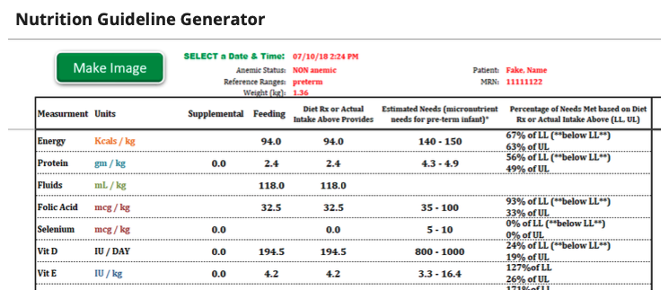
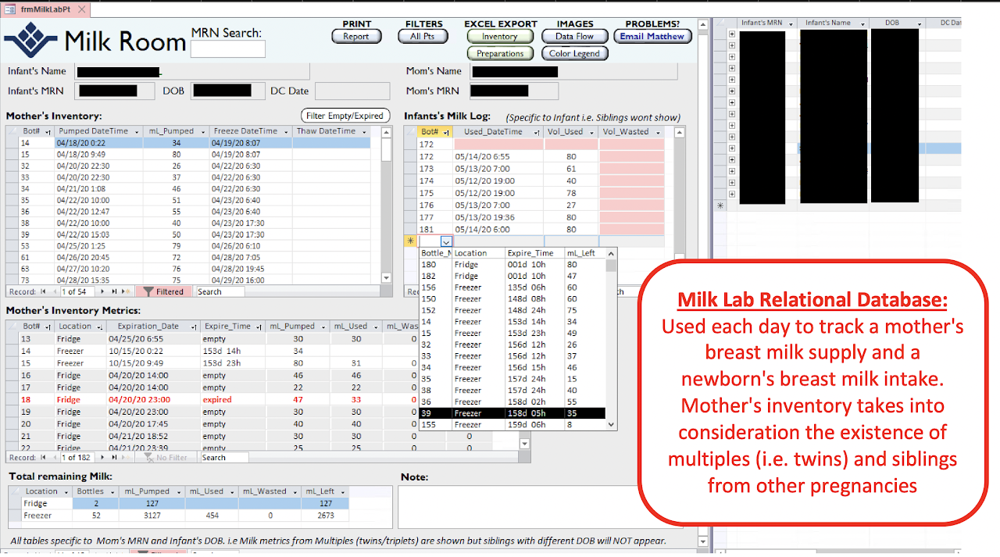

This saved the unit $100,000 annually and the staff 60 hours of work a week.
Welcome to my portfolio!
- My Accomplishments ∙
- My Projects ∙
- Contact Me
Christina Thai, MSN, FNP-C
I am a driven Family Nurse Practitioner seeking a job as an Informatics Nurse. I have experience building dashboards, data analytic tools, and websites for doctors & nurses. My passions include improving clinical workflow and solving technical problems.

Automated my units' workflow
Optimized my units' data pipeline
This improved data quality and patient outcomes.
Created dashboards to track key metrics
This allowed the NICU, L&D, MICC, and ambulatory surgery center to easily track their progress towards accreditation.

this is some subtext under an illustration or image
Pre-term infant diet calculator
Diets (i.e. caloric & micronutrient intake) are everything in the NICU! Pre-term infant diets are calculated based on the baby's weight and anemic status.
Before my project:
These calculations were done manually which made them very time-consuming and expensive; it was one dietitian's full-time job to solely calculate all our NICU babies' diets by hand.
The calculations were often incorrect which led to suboptimal nutrition for our babies!
The results were a pain to summarize in a note so they were rarely charted, leaving the rest of the care team in the dark.
So I created a pre-term infant diet calculator in Excel.
Results of my project:
My calculator saved the unit 40 hours of work a week (or $50,000 annually).
Our pre-term infants were getting the proper nutrition they needed which led to better clinical outcomes!
The macro button that screenshotted the results can be easily pasted into the patient's chart where the whole care team can see.

Milk lab relational database
Did you know breast milk contains white blood cells and antibodies made by mom for the baby to fight against bacteria and viruses? This is why it is commonly referred to as "liquid gold" and why breast milk is so vital for NICU babies!
When mom drops off her milk at the NICU, each bottle is labeled with the corresponding baby's info and the date & time it was pumped before we store it in the fridge or freezer. This ensures that later when the milk gets thawed, it goes to the right baby and it's not expired.
Before my project:
There was no centralized system to inventory the milk. IT tried to help but they gave us incomplete solutions. As a result, the bottles were haphazardly recorded in 2 different paper logs and in the EHR.
Our nurses were overburden with the extra responsibility of checking the freezer for expired milk.
As a consequence, lots of breast milk had expired because we were unaware of the expiry date.
So I created a milk lab relational database in Access.
Results of my project:
My database provided centralized & effective system to track our milk inventory. We were now able to track which bottles were soon-to-be-expired, their location (fridge or freezer), as well as the trend of mom's milk supply.
Our nurses had more time to provide patient care which led to better clinical outcomes.
NO MORE WASTED BREAST MILK FOR OUR CRITICALLY-ILL AND PRE-TERM BABIES!!!

"What is she working on now?"
-Inquiring minds
Call to action! it's time!
Sign up for our production by clicking the button